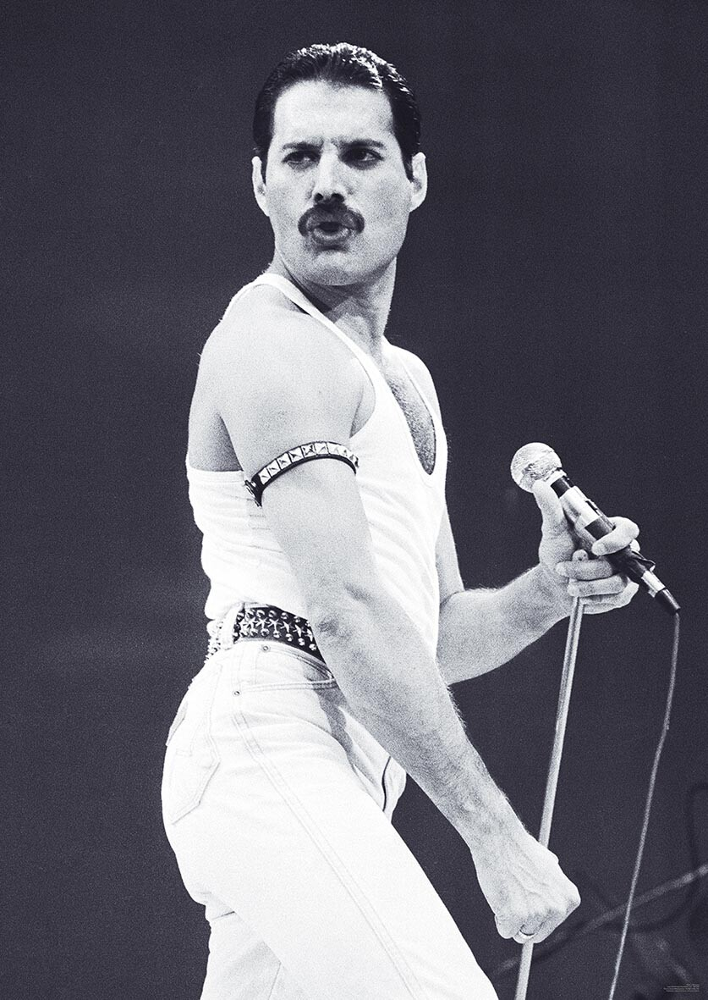

Freddie Mercury foi cantor, pianista e compositor britânico, conhecido pelo seu trabalho
de vocalista na banda de rock Queem que começou em 1970 e foi até o ano de sua morte, 1991.

Mercury se apresentando em New Haven, Connecticut, em 1977.Nascido como Farrokh Bulsara, nasceu na colônia britânia Cidade de Pedra, em Zanzibar(hoje parte da Tanzânia),
Quando Freddie tinha 16 anos, a família se mudou para Londres, onde ele passou a estudar arte na Escola
Politécnica Isleworth, posteriormente ganhando seu diploma como designer gráfico pela Ealing Art College.
Em 1969, Freddie iniciou a banda Ibex, depois chamada Wreckage, mas não durou muito e depois integrando
o grupo Sour Milk Sea. Em abril de 1970, Freddie se juntou ao guitarrista Brian May e ao baterista
Roger Taylor no trio Smile, cujo nome foi alterado para “Queem”, e nessa época,
Freddie adotou o “Mercury” como sobrenome artístico.